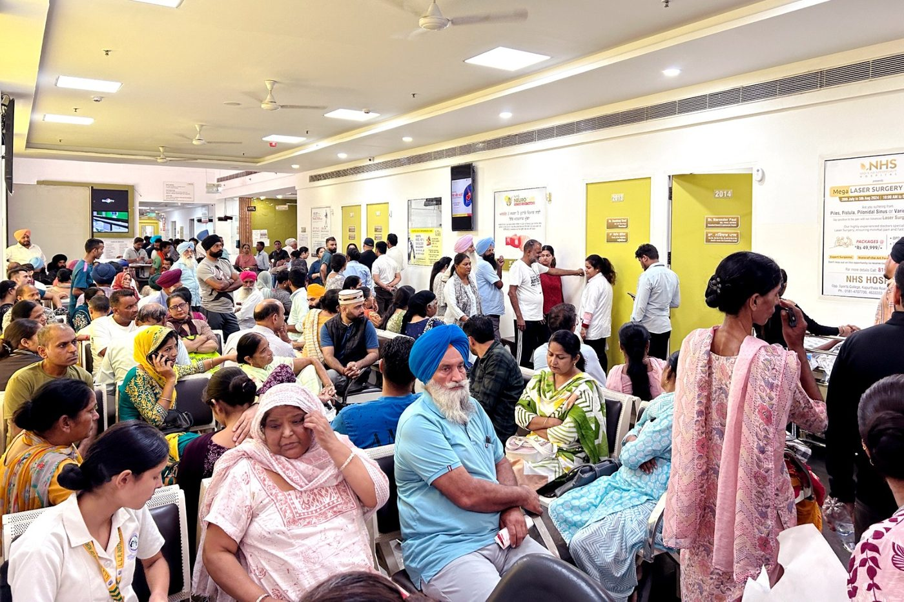
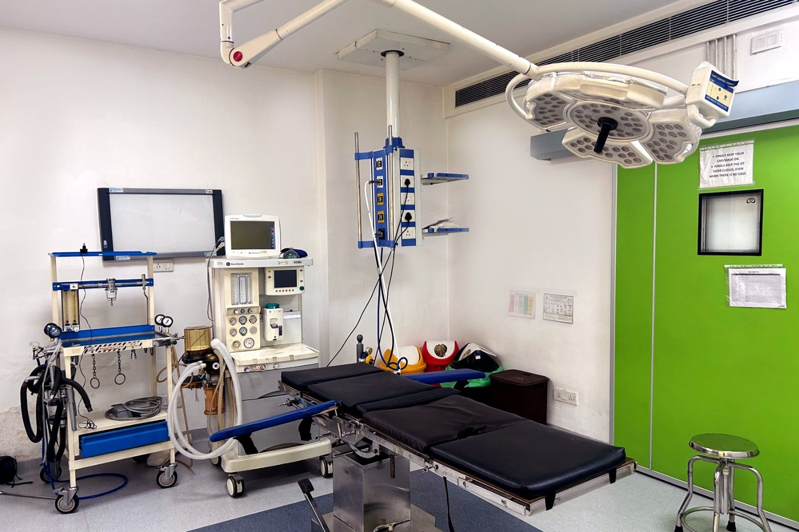
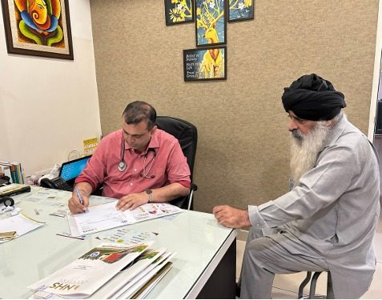
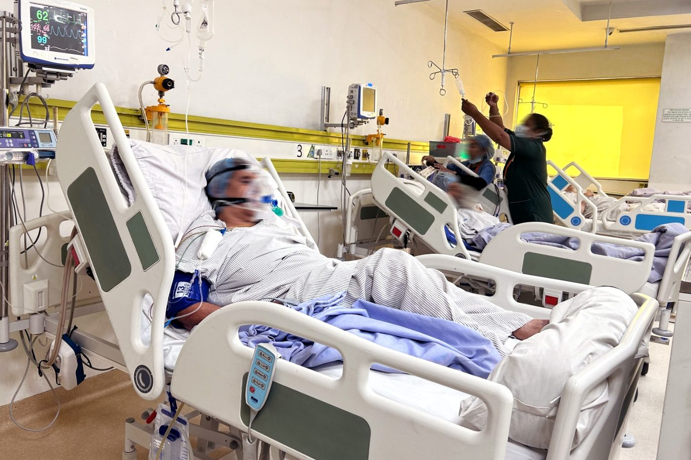
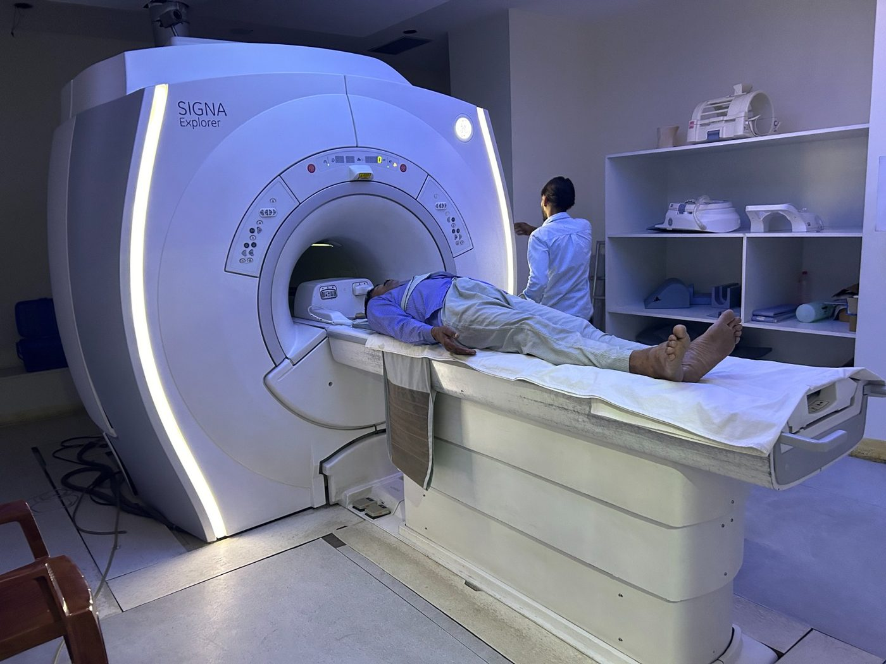
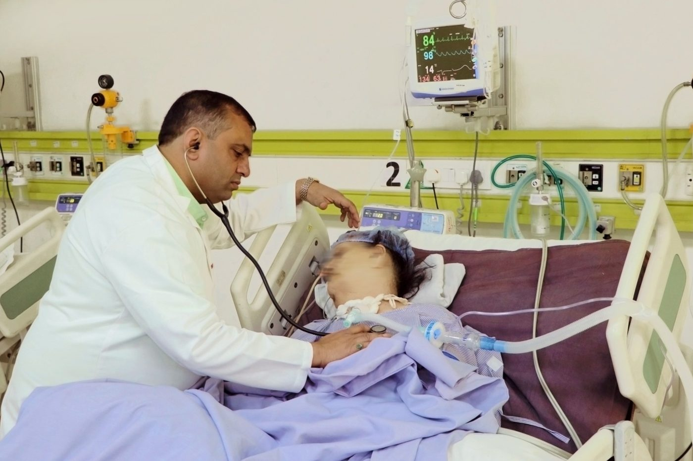
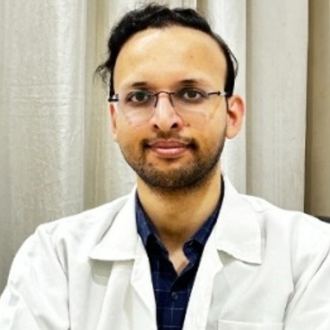

Where the consultation, the procedure and the overnight stay happen.ਮੁਲਾਕਾਤ, ਪ੍ਰੋਸੀਜਰ ਤੇ ਰਾਤ ਰੁਕਣਾ।






Consultant Gastroenterologist — therapeutic endoscopy, liver diseaseਪੇਟ ਤੇ ਜਿਗਰ ਰੋਗਾਂ ਦੇ ਮਾਹਿਰ
Leads the digestive sciences service: diagnostic and therapeutic endoscopy, ERCP, endoscopic ultrasound, and the management of fatty liver, hepatitis, cirrhosis and pancreatitis.ਪਾਚਣ ਵਿਭਾਗ ਦੀ ਅਗਵਾਈ।
Qualifications and registration details are available at the desk on request.ਡਿਗਰੀਆਂ ਦੀ ਜਾਣਕਾਰੀ ਕਾਊਂਟਰ ਤੋਂ।
Most digestive problems are diagnosed and treated through the scope rather than through an incision. Which test you need is decided at the consultation.ਕਿਹੜਾ ਟੈਸਟ ਚਾਹੀਦਾ ਹੈ, ਇਹ ਮੁਲਾਕਾਤ ਵਿੱਚ ਤੈਅ ਹੁੰਦਾ ਹੈ।
Upper GI endoscopy and colonoscopy for acidity, bleeding, ulcers, polyps and unexplained symptoms.ਪੇਟ ਦੀ ਦੂਰਬੀਨ ਜਾਂਚ।
A painless scan that measures liver stiffness and fat — no needle, result the same day.ਬਿਨਾਂ ਦਰਦ ਸਕੈਨ।
Endoscopic treatment of bile duct stones, blockages and strictures.ਪਿੱਤ ਦੀ ਨਾਲੀ ਦਾ ਦੂਰਬੀਨ ਇਲਾਜ।
Fatty liver and NASH, hepatitis, cirrhosis and jaundice, followed up with imaging and blood work on site.ਚਰਬੀ ਵਾਲਾ ਜਿਗਰ, ਹੈਪੇਟਾਈਟਸ।
Piles, fissure, fistula and pilonidal sinus treated with laser techniques in suitable cases.ਢੁਕਵੇਂ ਕੇਸਾਂ ਵਿੱਚ ਲੇਜ਼ਰ ਇਲਾਜ।
Gastric balloon and medically supervised weight management, with dietetics in the same building.ਗੈਸਟ੍ਰਿਕ ਬੈਲੂਨ ਤੇ ਭਾਰ ਘਟਾਉਣਾ।
Persistent bloating has many possible causes — diet and gut motility, acid problems, intolerance, gallbladder or liver disease among them. The point of the workup is to find which one it is instead of treating it blindly.ਲਗਾਤਾਰ ਪੇਟ ਫੁੱਲਣ ਦੇ ਕਈ ਕਾਰਨ ਹੋ ਸਕਦੇ ਹਨ।
General information only — it cannot tell you what is causing your own symptoms.ਸਿਰਫ਼ ਆਮ ਜਾਣਕਾਰੀ।
Your history, examination, and a plain explanation of which test will actually answer the question.ਸਾਫ਼ ਸ਼ਬਦਾਂ ਵਿੱਚ ਟੈਸਟ ਦੀ ਜਾਣਕਾਰੀ।
Blood work, ultrasound, FibroScan or endoscopy — usually without a second trip across town.ਦੂਜੀ ਥਾਂ ਜਾਣ ਦੀ ਲੋੜ ਨਹੀਂ।
Day-care in most cases, with written instructions before you leave and the insurance desk handling approvals.ਬੀਮੇ ਦੀ ਮਨਜ਼ੂਰੀ ਸਾਡਾ ਕਾਊਂਟਰ।
Review of biopsy or scan results, diet guidance, and a longer-term plan where the condition needs one.ਖ਼ੁਰਾਕ ਦੀ ਸਲਾਹ ਤੇ ਲੰਮੇ ਸਮੇਂ ਦੀ ਯੋਜਨਾ।
Insurance approvals and government schemes handled by our desk before your procedure.
On-site pathology under a consultant pathologist, so reports are not sent out and waited on.ਰਿਪੋਰਟਾਂ ਬਾਹਰ ਭੇਜਣ ਦੀ ਲੋੜ ਨਹੀਂ।
The desk explains fasting, medicines to pause and who should come with you.ਕਾਊਂਟਰ ਦੱਸਦਾ ਹੈ।